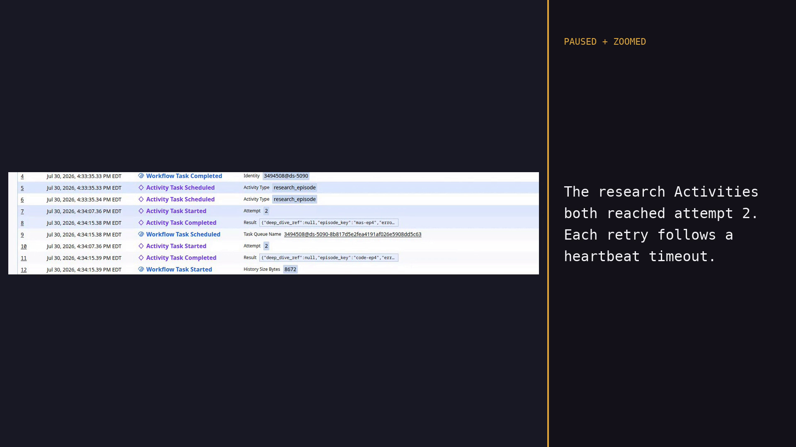

Temporal brings a research pipeline back to life
I’ll show the existing research pipeline, its Python rewrite with Temporal Workflows and Activities, and the same Workflow Execution surviving a killed Worker.
I’ll show the existing research pipeline, its Python rewrite with Temporal Workflows and Activities, and the same Workflow Execution surviving a killed Worker.
A ten-episode research pipeline with real prompts, dependencies, and published outputs.
A Temporal Workflow for orchestration, Activities for external work, and a Worker that registers both.
Kill the Worker during two Activities, restart it, and inspect the retry in Temporal Web.
2 series
10 episode branches
32 output documents
The Node process held the active phase and in-flight promises. After a crash, files remained, but no durable cursor said which calls had completed or which stage should resume.
phase('Research')
await pipeline(
EPS,
// Stage 1: research
(it) => agent(`Research ONE podcast episode...`),
// Stage 2: deep dive
(research, it) =>
agent(`Write a rigorous DEEP-DIVE...`),
// Stage 3: script
(_dd, it) =>
agent(`Write a podcast SCRIPT...`),
)
phase('Synthesis')
await parallel(literatureReviews)researched = await workflow.execute_activity(
"research_episode", request, ...)
deep_dive = await workflow.execute_activity(
"write_deep_dive", DeepDiveRequest(...), ...)
script = await workflow.execute_activity(
"write_podcast_script", ScriptRequest(...), ...)
series_reviews = await asyncio.gather(
*(self._write_series_review(...)
for series in pipeline.series)
)@workflow.defn
class PodcastResearchWorkflow:
@workflow.query
def progress(self) -> PodcastProgress:
return self._progress
@workflow.run
async def run(self, pipeline: PodcastPipelineInput):
for offset in range(
0, total, pipeline.max_parallel_episodes
):
batch = pipeline.episodes[
offset : offset + pipeline.max_parallel_episodes
]
results = await asyncio.gather(
*(self._run_episode(...)
for episode in batch)
)
series_reviews = await asyncio.gather(
*(self._write_series_review(...)
for series in pipeline.series)
)Episode order, bounded concurrency, progress, completion policy, and final fan-in.
Network calls, model calls, file I/O, clock reads, and environment access.
Temporal records the decisions in Event History so another Worker can replay them.
@activity.defn(name="research_episode")
async def research_episode(
request: EpisodeRequest,
) -> EpisodeResult:
store = ArtifactStore(
request.pipeline.artifact_root
)
if request.pipeline.mode == "fixture":
raw_sources = await asyncio.to_thread(
_fixture_sources, request
)
else:
raw_sources = await _live_sources_with_heartbeats(
request, store
)worker = Worker(
client,
task_queue=TASK_QUEUE,
workflows=[PodcastResearchWorkflow],
activities=[
research_episode,
write_deep_dive,
write_podcast_script,
write_series_review,
write_pipeline_manifest,
],
graceful_shutdown_timeout=timedelta(
seconds=30
),
)
await worker.run()Temporal provides at-least-once Activity execution. The response journal suppresses repeated reads after a response is stored. A paid or mutating provider must also honor the request ID to cover the gap between provider success and the journal write.
Kill the Worker, keep the runTwo research Activities lose their Worker. Temporal schedules attempt 2 on the replacement Worker. The same Workflow Execution finishes its deep dives, scripts, reviews, and manifest.
